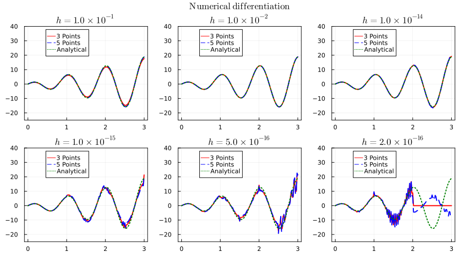
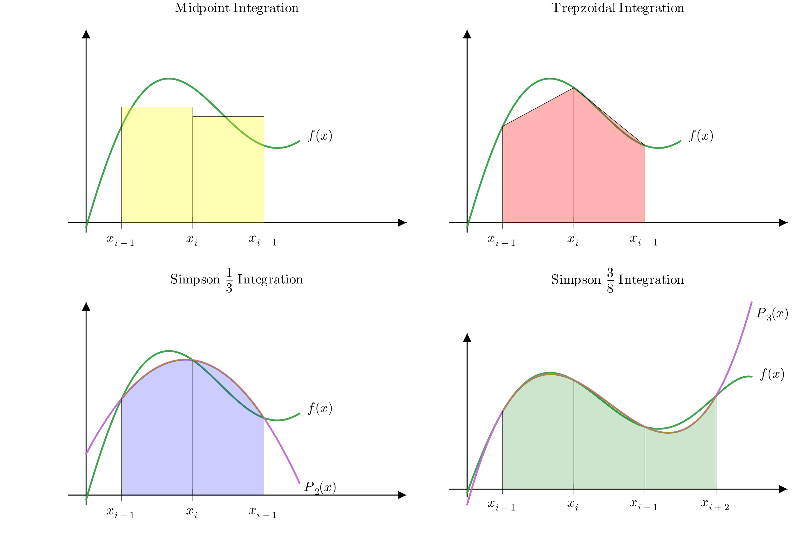
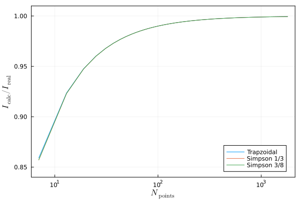

일변수 함수의 미분과 적분
% %
%\[ \DeclarePairedDelimiters{\set}{\{}{\}} \DeclareMathOperator*{\argmax}{argmax} \]
1 일변수 함수의 미분
이 장에서는 수치해석적으로 주어진 함수의 미분을 구하는 방법을 알아본다. 앞서 설명했듯이함수 \(f: X\subset \mathbb{R} \to \mathbb {R}\) 이 \(x_0 \in X\) 에서 미분가능하다는 것은 다음의 극한이 존재한다는 것이다.
\[ f'(x_0)=\lim_{h\to 0} \dfrac{f(x_0+h)- f(x_0)}{h} \]
여기서 \(h\) 는 음수도, 양수도 가능하다. 그리고 우리가 앞서 배웠듯이 컴퓨터가 다룰수 있는 가장 \(0\) 에 가깝지만 가장 작은 수에는 한계가 있으므로 이러한 극한을 다룰수 없다. 따라서 수치해석적으로 미분을 계산할 때는 우리가 관심있는 영역 \([a,\,b]\subset X\) 를 분할하여 수열을 만들어 다룰 수 밖에 없다. 즉 우리는 \(x_1=a<x_2<\cdots <x_n=b\) 에 대해 \(f(x_i) = y_i\) 로 정하고 수열 \((x_i)\) 와 \((y_i)\) 를 이용하여 수치해석적으로 미분을 구한다. 이것은 미분가능한 함수가 주어졌을 때 뿐만 아니라 이산적인 값 \(\{(x_i,\, y_i)\}\) 가 주어졌을 때도 동일하게 사용 할 수 있다. 우리는 \([a,\,b]\) 를 일정한 간격으로 분할한, 즉 \(x_{i+1}-x_i =h\) 가 상수일 경우만 생각하기로 한다.
1.1 전방차분과 후방차분
수열 \(y_1,\,y_2,\ldots\) 에 대해 전방 차분 (forward difference) 는 다음과 같이 정의된다.
\[ \Delta_F y_i := y_{i+1}-y_i \tag{1}\]
비슷한 방법으로 후방 차분 (backward difference) 은 다음과 같이 정의된다.
\[ \Delta_B y_i := y_{i}-y_{i-1} \tag{2}\]
함수 \(f(x)\) 에 대해 어떤 특정한 간격 \(h>0\) 가 주어졌을 때 전방 차분은 \(\Delta_F f(x) = f(x+h)-f(x)\) 이며 후방차분은 \(\Delta_B f(x) = f(x)-f(x-h)\) 이다. 앞서 말했듯이 수치해석에서는 \(h\to 0\) 극한을 사용할 수 없으므로 차분을 이용하여 미분값을 계산한다.
1.2 두 점을 이용한 미분
함수 \(f\) 가 \(C^2\) 함수일 때 \(f\) 에 대한 테일러 전개는 아래와 같다.
\[ \begin{aligned} f(x-h) &= f(x) - f'(x)h + \dfrac{f''(\xi_1)}{2} h^2, \\ f(x+h) &= f(x) + f'(x)h + \dfrac{f''(\xi_2)}{2} h^2. \end{aligned} \tag{3}\]
\(h>0\) 일 때 전방차분과 후방차분을 이용하여
\[ \begin{aligned} f'(x) &= \dfrac{f(x+h)-f(x)}{h} + O(h) = \dfrac{\Delta_F f(x)}{h} + O(h) \\ &= \dfrac{f(x)-f(x-h)}{h} + O(h) = \dfrac{\Delta_B f(x)}{h} + O(h) \end{aligned} \tag{4}\]
로 근사 할 수 있다.
1.3 세 점을 이용한 미분
2차와 3차 테일러 다항식 까지 전개한다면 \[ \begin{aligned} f(x-h) &= f(x) - f'(x)h + \dfrac{f''(x)}{2} h^2 - \dfrac{f^{(3)}(\xi_1)}{6} h^3, \\ &= f(x) - f'(x)h + \dfrac{f''(x)}{2} h^2 - \dfrac{f^{(3)}(x)}{6} h^3 + \dfrac{f^{(4)}(\xi'_1)}{24}h^4, \\ f(x+h) &= f(x) + f'(x)h + \dfrac{f''(x)}{2} h^2 + \dfrac{f^{(3)}(\xi_2)}{6} h^3, \\ &= f(x) + f'(x)h + \dfrac{f''(x)}{2} h^2 + \dfrac{f^{(3)}(x)}{6} h^3 + \dfrac{f^{(4)}(\xi'_2)}{24}h^4 \end{aligned} \tag{5}\]
를 만족하는 \(\xi_1,\,\xi'_1\in (x-h,\, x),\, \xi_2,\,\xi'_2 \in (x,\,x+h)\) 가 존재한다.
이로부터
\[ \begin{aligned} f(x+h)-f(x-h) &= 2f'(x) h + \dfrac{1}{6} \left(f^{(3)}(\xi_2) +f^{(3)}(\xi_1) \right)h^3, \\ f(x+h) -2 f(x) + f(x-h) &= f''(x) h^2 + \dfrac{1}{24}\left(f^{(4)}(\xi'_1) +f^{(4)}(\xi'_2) \right)h^4 \end{aligned} \]
이므로 우리는 이것을 이용하여 1계 뿐만 아니라 2계 도함수에 대한 근사값도 구할 수 있다. 여기서 \(f^{(3)}(\xi_2) +f^{(3)}(\xi_1)\) 를 보자. \(\xi_1\in [x-h,\,x],\, \xi_2 \in [x,\,x+h]\) 인데, \(f\in C^3_{[x-h,x+h]}\) 이면 따름정리 : 여러 점의 경우 에 의해 \(f^{(3)}(\xi) = \frac{1}{2}\left(f^{(3)}(\xi_2) +f^{(3)}(\xi_1) \right)\) 를 만족하는 \(\xi\in[x-h,\,x+h]\) 가 존재하며, 같은 이유로 \(f\in C^4_{[x-h,\,x+h]}\) 이면 \(f^{(4)}(\xi')=\frac{1}{2}\left(f^{(4)}(\xi'_1) +f^{(4)}(\xi'_2) \right)\) 를 만족하는 \(\xi'\in [x-h,\,x+h]\) 가 항상 존재한다. 따라서 다음과 같이 도함수와 2계 도함수를 근사 할 수 있다.
\[ \begin{aligned} f'(x) &= \dfrac{f(x+h)-f(x-h)}{2h} - \dfrac{f^{(3)}(\xi)}{6}h^2 ,\\ f''(x) &= \dfrac{f(x+h) - 2f(x) + f(x-h)}{h^2} - \dfrac{f^{(4)}(\xi')}{12}h^2 \end{aligned} \tag{6}\]
이 때 수치해석적으로 계산한 미분의 오차는 \(h^2\) 에 비례한다. 따라서 \(h\) 을 작게 잡을 수록 오차가 작아지며 충분히 작을 때 전방차분이나 후방차분보다 오차가 작을 것을 기대 할 수 있다. 위의 식에 의해 구한 미분의 추정값을 중앙 차분 (central difference) 라고 한다. 아래 그림은 함수 \(f\) 에 대한 전방 차분, 후방 차분, 중앙 차분값을 그림으로 표현하였다.
1.4 Roundoff 에러
\(h\) 값이 작을 수록 오차가 작아지지만 \(h\) 값이 어느 이하로 작아지면 에러가 발생한다. 아래는 쉬운 예를 보여준다. 우리는 \(f(x)=e^x\) 의 도함수는 자기 자신과 같으며, \(f(0)=f'(0)=1\) 임을 알고 있다. 앞의 전방, 후반 차분법과 보통의 차분법에 대해 \(h\) 값을 변화시키며 \(f'(0)\) 의 값을 계산하였다. \(h\) 값이 충분히 작지 않을 때는 오차가 발생하였으나 어느 정도 작아지면 그 값이 정확하고 안정적이다. 그러나 \(h\) 값이 \(10^{-13}\) 보다 작아지면 roundoff 에러가 발생하여 불안정해지는 것을 알 수 있다.
1.5 다섯개의 점을 이용한 미분
지금까지 1차와 2차 테일러 전개를 이용하여 미분계수를 \(O(h)\) 나 \(O(h^2)\) 의 오차로 구하는 방법을 소개하였다. 고차 테일러 전개를 이용하면 더 정확하게 미분값을 구할 수 있다. 4차 테일러 다항식과 나머지 값은 다음과 같다.
\[ \begin{aligned} f(x-2h) &= f(x) - f'(x) \cdot (2h) + \dfrac{f''(x)}{2}(2h)^2 \\ &\qquad \qquad - \dfrac{f'''(x)}{6} (2h)^3 + \dfrac{f^{(4)}(x)}{24}(2h)^4 - \dfrac{f^{(5)}(\xi_1)}{120} (2h)^5\,\\ f(x-h) &= f(x) - f'(x) \cdot (h) + \dfrac{f''(x)}{2}(h)^2 \\ &\qquad \qquad - \dfrac{f'''(x)}{6} (h)^3 + \dfrac{f^{(4)}(x)}{24}(h)^4 - \dfrac{f^{(5)}(\xi_2)}{120} (h)^5\,\\ f(x+h) &= f(x) + f'(x) \cdot (h) + \dfrac{f''(x)}{2}(h)^2 \\ &\qquad \qquad + \dfrac{f'''(x)}{6} (h)^3 + \dfrac{f^{(4)}(x)}{24}(h)^4 + \dfrac{f^{(5)}(\xi_3)}{120} (h)^5\,\\ f(x+2h) &= f(x) + f'(x) \cdot (2h) + \dfrac{f''(x)}{2}(2h)^2 \\ &\qquad \qquad + \dfrac{f'''(x)}{6} (2h)^3 + \dfrac{f^{(4)}(x)}{24}(2h)^4 + \dfrac{f^{(5)}(\xi_4)}{120} (2h)^5\,\\ \end{aligned} \tag{7}\]
이로부터,
\[ \begin{aligned} f(x-2h) -8f(x-h) + 8f(x+h) - f(x+2h) &= 12 f'(x) h+ O (h^5) \,,\\ -f(x-2h) + 16f(x-h) -30 f(x) + 16 f(x+h) - f(x+2h) &= 12 f''(x) h^2 + O(h^5) . \end{aligned} \]
임을 안다. 즉,
\[ \begin{aligned} f'(x) & = \dfrac{f(x-2h) -8f(x-h) + 8f(x+h) - f(x+2h)}{12h} + O(h^5)\,,\\ f''(x) &= \dfrac{-f(x-2h) + 16f(x-h) -30 f(x) + 16 f(x+h) - f(x+2h)}{12h^2} + O(h^4) \end{aligned} \tag{8}\]
이다.
다음 그림은 함수 \(f(x) = x\sin (x)\) 에 대해 \(h\) 를 변화시켜 가면서로 잡고 위에서 설명한 두가지 방법을 이용하여 도함수를 구했을때의 그래프(“3 Points”, “5 Points”) 와 \(f'(x) = \sin (x) + x\cos (x)\) 의 그래프 (“Analytical”) 를 같이 그린 것이다. \(h=1\times 10^{-1}\) 에서는 첫번째 수치미분보다 두번째 수치미분이 좀 더 실제 값에 가까우며 \(1 \times 10^{-2}\) 부터 \(1.0 \times 10^{-14}\) 까지는 두 방법 모두 상당히 정확한 값을 보여준다. 그러나 \(h\) 값이 \(1.0\times 10^{-15}\) 보다 작아지면서부터는 뚜렷하게 오차를 보여준다. 이것은 수치 미분을 구할 때 분모를 \(h\) 로 나누게 되는데, 이 값이 작을수록 round-off 에러가 발생하기 때문이다. 따라서 적당한 \(h\) 값을 잡는 것이 중요하다.

2 자동 미분
참고자료
2.1 편미분과 합성함수의 편미분
\(f:\mathbb{R}^n \to \mathbb{R}\) 에 대해 \(f(\boldsymbol{x})\) 의 \(\boldsymbol{a}\in \mathbb{R}^n\) 에서의 \(i\) 번째 변수에 대한 편미분 \(\dfrac{\partial f(\boldsymbol{a})}{\partial x_i}\) 은 다음과 같이 정의된다.
\[ \dfrac{\partial f(\boldsymbol{a})}{\partial x_i} := \lim_{h \to 0}\dfrac{f(\boldsymbol{a}+h\boldsymbol{e}_i) - f(\boldsymbol{a})}{h} \]
이것은 \(\boldsymbol{x}\) 에 대해 \(x_i\) 를 제외한 \(x_j\) 에 대해 \(x_j=a_j (j\ne i)\) 로 고정시킨 함수를 \(\overline{f}\) 라 고 했을 때의 \(\dfrac{d \overline{f}(a_j)}{dx}\) 와 같다. 즉 편미분을 구하는 것은 본질적으로 일변수 함수의 미분을 구하는 것과 다르지 않다. 또 하나 중요한 값은 헤시안(Hessian) 이라 불리는 함수로 \(f\) 에 대한 \(\boldsymbol{a}\) 에서의 헤시안 \(\boldsymbol{H}_f(\boldsymbol{a})\) 은 다음과 같이 정의된다.
\[ \boldsymbol{H}_F(\boldsymbol{a}) = \begin{bmatrix} \dfrac{\partial^2 f(\boldsymbol{a})}{\partial x_1\partial x_1} & \cdots & \dfrac{\partial^2 f(\boldsymbol{a})}{\partial x_1 \partial x_n} \\ \vdots & \ddots & \vdots \\ \dfrac{\partial^2 f(\boldsymbol{a})}{\partial x_n \partial x_1} & \cdots & \dfrac{\partial^2 f(\boldsymbol{a})}{\partial x_n \partial x_n} \end{bmatrix} \tag{9}\]
\(f(\boldsymbol{x})\) 가 \(C^2\) 급 함수라면, 즉 2차 편미분이 모든 독립변수에 대해 존재하며 모두 연속이라면 헤시안은 대칭행렬이다.
이제 다변수 함수의 경우를 보자. \(F:\mathbb{R}^n \to \mathbb{R}^m\) 함수 \(F(\boldsymbol{x}) = \begin{bmatrix} f_1(\boldsymbol{x}) & \cdots & f_m(\boldsymbol{x})\end{bmatrix}^T\) 에 대해
\[ \dfrac{\partial F(\boldsymbol{a})}{\partial x_i} = \lim_{h \to 0} \dfrac{F(\boldsymbol{a} + h \boldsymbol{e}_i)- F(\boldsymbol{x})}{h} = \begin{bmatrix} \dfrac{\partial f_1(\boldsymbol{a})}{\partial x_i} \\ \vdots \\ \dfrac{\partial f_m(\boldsymbol{a})}{\partial x_i}\end{bmatrix} \tag{10}\]
이며 야코비 행렬 \(\boldsymbol{J}_F(\boldsymbol{a})\) 는
\[ \boldsymbol{J}_F(\boldsymbol{a}) = \begin{bmatrix} \dfrac{\partial f_1(\boldsymbol{a})}{\partial x_1} & \cdots & \dfrac{\partial f_1(\boldsymbol{a})}{\partial x_1} \\ \vdots & \ddots &\vdots \\ \dfrac{\partial f_m(\boldsymbol{a})}{\partial x_n} & \cdots & \dfrac{\partial f_m(\boldsymbol{a})}{\partial x_n}\end{bmatrix} \tag{11}\]
이다.
이제 함성함수를 생각해보자. \(F=F^{(N)}(F^{(N-1)} \cdots F^{(2)}(F^{(1)}(\boldsymbol{x}))\cdots )\) 이며 \(F^{(k)} = \begin{bmatrix} f^{(k)}_1 & \cdots f^{(k)}_{m_k}\end{bmatrix}^T\) 라고 하자. \(\boldsymbol{z}^{(1)} = F^{(1)}(\boldsymbol{a})\), \(\boldsymbol{z}^{(2)} = F^{(2)}(F^{(1)}(\boldsymbol{a})),\ldots\), \(\boldsymbol{y}=F(\boldsymbol{a})\) 라고 하면
\[ \begin{aligned} \dfrac{\partial y_j}{\partial x_i} = \dfrac{\partial f_j(\boldsymbol{x})}{\partial x_i} &= \sum_{k_{N-1}=1}^{m_{N-1}}\sum_{k_{N-2}=1}^{m_{N-2}} \cdots \sum_{k_1=1}^{m_1}\dfrac{\partial f_j^{(N)}(\boldsymbol{z}^{(N-1)})}{\partial z^{(N-1)}_{k_{N-1}}} \dfrac{\partial f^{(N-1)}_{k_{N-1}}(\boldsymbol{z}^{(N-2)})}{\partial z^{(N-2)}_{k_{N-2}}} \cdots \dfrac{\partial f^{(1)}_{k_{1}}(\boldsymbol{x})}{\partial x_i} \\ &=\sum_{k_{N-1}=1}^{m_{N-1}}\sum_{k_{N-2}=1}^{m_{N-2}} \cdots \sum_{k_1=1}^{m_1}\dfrac{\partial z_j^{(N)}(\boldsymbol{z}^{(N-1)})}{\partial z^{(N-1)}_{k_{N-1}}} \dfrac{\partial a^{(N-1)}_{k_{N-1}}(\boldsymbol{z}^{(N-2)})}{\partial z^{(N-2)}_{k_{N-2}}} \cdots \dfrac{\partial z^{(1)}_{k_{1}}(\boldsymbol{x})}{\partial x_i} \end{aligned} \tag{12}\]
이며, 이로부터
\[ \boldsymbol{J}_F(\boldsymbol{a}) = \boldsymbol{J}_{F^{(N)}}(\boldsymbol{z}^{(N-1)}) \boldsymbol{J}_{F^{(N-1)}}(\boldsymbol{z}^{(N-2)}) \cdots \boldsymbol{J}_{F^{(1)}}(\boldsymbol{a}) \tag{13}\]
임을 안다. 이것이 소위 chain rule 이다.
2.2 자동 미분
특히 현재의 인공지능의 발전에 있어 위에 언급한 대량의 함수와 변수를 사용하는 미분과 편미분을 정확하고 빠른게 계산하는 것이 중요해 졌다. 전통적으로 함수의 미분을 컴퓨터를 이용하여 계산하는 방법에는 세가지가 있었다.
- [수동] 미분/편미분 함수를 손으로 계산하고, 그 결과를 코딩한다.
- [차분] 앞서 배운 유한 차분법을 이용하여 수치해석적으로 계산한다.
- [기호] 메쓰메티카(Mathematica) 프로그램과 같이 기호를 이용하여 미분한다.
이 방법은 모두 치명적인 단점이 존재한다. ‘수동’ 방법은 일반적인 함수에 대해 사용 할 수 없고, 인적 오류가 나기 쉽다. ‘차분’ 법은 항상 truncation error 와 round-off error 에 노출된다. 게다가 변수가 많고 여러 단계로 합성된 함수의 경우(인공지능의 신경망이 정확히 이런 경우이다) 그 오차가 계속 누적되기 때문에 오차가 필연적으로 커질 수 밖에 없다. ‘기호’ 법은 느리며 함수가 복잡할 때 만족할 만한 깔끔한 결과를 낼 수 없고 컴퓨팅 파워를 많이 사용한다.
이를 극복할 수 있는 방법이 자동미분이다. 어떤 함수는 그 도함수가 간단하다. 예를 들어 \(x^n\) 이나 삼각함수, 지수-로그 함수 같은 경우이다. 그리고 함수간의 사칙연산과 합성에 대해 그 도함수는 간단한 규칙, 즉 chain rule 로 계산된다.
여기서는 자동 미분의 구체적인 구현에 대해 설명하지 않고, 자동 미분은 어떻게 이루어 지는지, 전진법(forwared AD)과 후진법(backward AD) 는 어떻게 다른지에 대해 설명하기로 한다.
2.3 전진법과 후진법
전진법
아래의 식을 사용한다.
\[ \begin{aligned} \dfrac{\partial z^{(m)}_i}{\partial x_j} &= \sum_{k_1}\cdots \sum_{k_{m-1}}\dfrac{\partial z_{k_1}^{(1)}(\boldsymbol{a})}{\partial x_j} \cdots \dfrac{\partial z_{k_{m-1}}^{(m-1)}(\boldsymbol{z}^{(m-2)})}{\partial z^{(m-2)}_{k_{m-2}}}\dfrac{\partial z_i^{(m)}(\boldsymbol{z}^{(m-1)})}{\partial z^{(m)}_{k_{m-1}}} \\[0.3em] &=\sum_{k_{m-1}} \cdots \sum_{k_1} \dfrac{\partial z_i^{(m)}(\boldsymbol{z}^{(m-1)})}{\partial z^{(m)}_{k_{m-1}}} \dfrac{\partial z_{k_{m-1}}^{(m-1)}(\boldsymbol{z}^{(m-2)})}{\partial z^{(m-2)}_{k_{m-2}}} \cdots \dfrac{\partial z_{k_1}^{(1)}(\boldsymbol{a})}{\partial x_j} \\[0.3em]\\ &= \left[\boldsymbol{J}_{F^{(m)}}(\boldsymbol{z}^{(m-1)}) \cdots \boldsymbol{J}_{F^{(1)}}(\boldsymbol{a})\right]_{ij} \end{aligned} \tag{14}\]
\(m=1\), 즉 \(\dfrac{\partial z^{(1)}(\boldsymbol{a})}{\partial x_j}\) 부터 계산하기 시작하여 \(m=2,\,3,\ldots,\,N\) 까지 증가시키면 \(\boldsymbol{J}_F\) 를 계산 할 수 있다.
후진법
아래의 식을 사용한다.
\[ \begin{aligned} \dfrac{\partial y_j}{\partial z^{(m)}_i} &= \sum_{k_{N-1}}\cdots \sum_{k_{m+1}} \dfrac{\partial y_j(\boldsymbol{z}^{(N-1)})}{\partial z^{(N-1)}_{k_{N-1}}} \dfrac{\partial z^{(N-1)}_{k_{N-1}}(\boldsymbol{z}^{(N-2)})}{\partial z^{(N-2)}_{k_{N-2}}} \cdots \dfrac{\partial z^{(m+1)}_{k_{m+1}}(\boldsymbol{z}^{m})}{\partial z^{(m)}_i} \\[0.3em] &=\sum_{k_{m+1}} \cdots\sum_{k_{N-1}} \dfrac{\partial z^{(m+1)}_{k_{m+1}}(\boldsymbol{z}^{m})}{\partial z^{(m)}_i} \cdots \dfrac{\partial z^{(N-1)}_{k_{N-1}}(\boldsymbol{z}^{(N-2)})}{\partial z^{(N-2)}_{k_{N-2}}}\dfrac{\partial y_j(\boldsymbol{z}^{(N-1)})}{\partial z^{(N-1)}_{k_{N-1}}} \\[0.3em] &= \left[\boldsymbol{J}_{F^{(m+1)}}(\boldsymbol{z}^m)^T \cdots \boldsymbol{J}_{F^{(N-1)}}(\boldsymbol{z^{(N-1)}})^T \right]_{ij} \end{aligned} \tag{15}\]
\(m=(N-1)\), 즉 \(\dfrac{\partial y_j(\boldsymbol{z}^{(N-1)})}{\partial z^{(N-1)}_{k_N}}\) 부터 계산한다. \(m=N-2,\,N-3,\ldots,\,1\) 까지 감소시키면 \(\boldsymbol{J}_F\) 를 계산 할 수 있다… 고 쉽게 넘어 갈 수 있지만 우리는 아직 \(\boldsymbol{z}^{(m)}= F^{(m)}\circ \cdots \circ F^{(1)}(\boldsymbol{a})\) 를 계산하지 않았다는 것을 기억하라. 후진법은 전진법과는 달리 두가지 과정으로 수행된다.
(\(1\)) 일단 \(\boldsymbol{z}^{(1)}=F^{(1)}(\boldsymbol{a})\) 부터 \(\boldsymbol{y} = F(\boldsymbol{a})= F^{N}\circ \cdots F^{(1)}(\boldsymbol{a})\) 까지 계산하며 이 값을 기억한다.
(\(2\)) (\(1\)) 에서 기억한 값을 이용하여 \(m=N-1\) 부터 \(m=1\) 까지의 편미분을 계산한다.
즉 후진법은 전진법에 비해 과정이 더 길고 함수값을 기억하고 있어야 한다는 단점이 있다. 일반적으로 \(F:\mathbb{R}^n \to \mathbb{R}^m\) 에 대해 \(m>n\) 이면 전진법이 유리하며 \(n>m\) 이면 후진법이 유리하다는 것이 잘 알려져 있다. \(n\) 이 \(m\) 보다 많이 크다면 후진법이 훨씬 좋다는 것이 알려져 있으며, 기계학습이 전형적으로 이런 경우이므로 기계학습에서는 거의 후진법이 사용된다.
예제 1 (전진법과 후진법) \(F:\mathbb{R}^3 \to \mathbb{R}\) 인 \(F(\boldsymbol{x}) = x_1^2 + e^{x_2 + 2x_3}\) 에 대해 \(\boldsymbol{a} = (1, 0, 1)\) 에서의 미분을 전진법과 후진법으로 구해보자.
3 일변수 함수의 적분 : 뉴턴-코츠 방법
수치해석적으로 적분을 구하는 방법을 알아보도록 한다. 다항식이나 삼각함수, 지수함수를 포함한 몇면 함수에 대해서는 우리가 이미 프로그래밍 언어에 내장되어 있는 기본적인 함수로 존재하므로 쉽게 구할 수 있다. 예를 들어 \([0, \theta]\) 영역에서의 \(\sin x\) 함수의 적분은
\[ \int_0^\theta \sin x \, dx = -\cos \theta +1 \]
이라는 것을 안다. 그러나 대부분의 함수는 수치해석적으로 구할 수 밖에 없다. 수학적으로는 우리는 어떤 구간에서 연속인 함수라면 그 구간에서 적분이 존재한다는 것을 알고 있다. 또한 \([a,\,b]\) 구간에서 불연속인 점이 유한개이면 적분이 존재한다는 것도 알고 있다1. 만약 적분구간이 부분적으로 연속인 유한개의 구간으로 이루어져 있다면, 각각의 유한개의 구간에 대한 적분의 합으로 생각 할 수 있으므로, 여기서는 연속인 경우만 다루기로 한다. 미분과 마찬가지로 \([a,\,b]\) 구간이 \(x_1=a<x_2<\cdots <x_{n-1}<x_n=b\) 인 \(n\) 개의 점을 이용하여 \(n-1\) 개의 부분구간(subintervals)로 분할되었다고 가정한다. 이렇게 적분을 유한개의 구간으로 나누어 구간의 폭과 구간마다 정해지는 값의 합으로 계산하는 방법을 구적법(quadrature) 라고 한다.
3.1 뉴턴-코츠 방법
많은 경우 구간의 간격 \(x_{i+1}-x_i\) 가 항상 같으며, 이런 구간에 대해 구적법으로 구하는 것을 뉴턴-코츠 방법(Newton-Cotes method) 이라고 한다. \([a,\,b]\) 구간에서 뉴턴-방법으로 적분을 수행할 때 양 끝점을 포함하여 구간을 나눌 수도 있고, 양 끝점을 빼고 구간을 나눌 수도 있다. 양 끝점을 포함하는 것을 닫힌 Newton-Cotes 방법(closed Newton-Cotes method) 이라고 하고, 양 끝점을 빼는 것을 열린 Newton-Cotes 방법(open Newton-Cotes method) 이라고 한다. 여기서는 닫힌 Newton-Cotes 방법에 대해서 주로 다루기로 한다. 우선 \([a,\,b]\) 구간을 \(n\) 개의 점 \(x_1,\ldots,\,x_n\) 을 이용하여 \(n-1\) 개의 등간격으로 분할하면 각 \(x_k\) 는 간격 \(h=(b-a)/(n-1)\) 에 대해 다음과 같다.
\[ x_k = a + (k-1)h = a+ (k-1)\dfrac{(b-a)}{n-1},\qquad k=1,\ldots,\,n. \]
이 때 적분값을 \(f(x_1), \ldots,\,f(x_n)\) 의 선형결합으로 다음과 같이 표현하는 것이 Newton-Cotes 방법이다.
\[ \begin{aligned} \int_{a}^b f(x)\, dx &\approx \sum_{k=1}^n w_i f(x_i)\qquad & & \text{closed Newton-Cotes method}\\ &\approx \sum_{i=2}^{n-1} w_i f(x_i) \qquad & & \text{open Newton-Cotes method} \end{aligned} \]
즉 우리가 여기서 구해야 할 것은 각 구간에서의 weight factor \(w_i\) 이다. Newton-Cotes 방법을 이용한 대표적인 적분방법은 사다리꼴 방법과 Simpson 방법이다.

중점법은 구간 \([x_k,\, x_{k+1}]\) 의 중점 \(\dfrac{1}{2}(x_k + x_{k+1})\) 에서의 함수값을 이용하여 적분값을 계산하는 방법이다. 사다리꼴 방법은 \([x_k,\,x_{k+1}]\) 의 적분을 \((x_k,\, f(x_k))\) 와 \((x_{k+1},\, f(x_{k+1}))\) 을 1차 함수로 근사하여 적분값을 계산한다. Simpson 방법은 두가지가 있는데 각각은 이어지는 세 점이나 네 점을 각각 2차함수와 3차함수로 근사하여 적분하는 방법이다.
3.2 중점을 이용한 적분
중점을 이용한 적분은 기본적으로 뉴턴-코츠 방법은 아니지만 구간 \([a,\,b]\) 와 함수 \(f(x)\) 가 주어졌을 때 함수의 적분을 구하는 가장 간단하고 직관적인 방법이기 때문에 여기에 소개하기로 한다. \([a,\,b]\) 구간을 \(n-1\) 개의 구간으로 나누어,
\[ a=x_1 < x_2 < \cdots < x_n=b \]
이며 \(k=1,\ldots,\,n-1\) 에 대해 \(x_{k+1}-x_k = h\) 라고 하자.
\[ \int_{a}^{b}f(x)\,dx = \sum_{k=1}^{n-1}\int_{x_k}^{x_{k+1}}f(x)\, dx \]
임을 안다. \([x_{k},\, x_{k+1}]\) 구간에 대한 적분을 구할 때 구간의 양 끝점에 대한 중점 \(x^{(m)}_k = \dfrac{x_{k+1}+x_{k}}{2}\) 에서의 함수값을 사용하는 방법이다. 즉,
\[ \int_{x_{k}}^{x_{k+1}} f(x)\,dx\approx f\left(\dfrac{x_{k+1}+x_i}{2}\right) h = f(x^{(m)}_k) h \]
로 근사하는 방법이다. 테일러 정리에 의해
\[ f(x) = f\left(x^{(m)}_k\right)+f'\left(x^{(m)}_i\right)\left(x-x^{(m)}_k\right) + \dfrac{1}{2}f^{(2)}(\xi_k) \left(x-x_k^{(m)}\right)^2 \]
을 만족하는 \(\xi_k\in [x_{k},\, x_{k+1}]\) 이 존재한다는 것을 안다. 위 식을 적분하면
\[ \int_{x_i}^{x_{i+1}} f(x)\, dx = f(x_i^m)h + \dfrac{1}{24}f^{(2)}(\xi_i)h^3 \]
이며, 따라서 \([a,\,b]\) 구간에서의 적분은
\[ \int_a^b f(x) \,dx= \sum_{i=1}^{n-1} f\left(\dfrac{x_{i}+x_{i+1}}{2}\right) h + \dfrac{h^3}{24} \sum_{i=1}^{n-1}f^{(2)}(\xi_i) \]
이다. \(f\in C^2_{[a,\,b]}\) 라면 따름정리 : 여러 점의 경우 에 의해 \(\displaystyle \sum_{i=1}^{n-1}f^{(2)}(\xi_i) = (n-1)f^{(2)}(\xi)\) 를 만족하는 \(\xi\in [a,\,b]\) 가 존재하므로,
\[ \int_a^b f(x) \, dx = \sum_{i=1}^{n-1} f\left(\dfrac{x_{i}+x_{i+1}}{2}\right) h + \dfrac{(n-1)h^3}{24} f^{(2)}(\xi) \]
를 만족한다. 중간값에 의한 적분 계산값을 \(I_M[a, b, n]\) 라고 하면
\[ I_M [f,\,a,\,b,\,n] = \sum_{i=1}^{n-1}f\left(\dfrac{x_{i}+x_{i+1}}{2}\right) h \]
이라고 할 수 있으며, \(M=\max \{ |f^{(2)}(x)| : x\in [a,\,b] \}\) 일 때 중점을 이용한 적분의 오차는 \(E_M [f,\,a,\,b,\,n]=\dfrac{(n-1)h^3}{24} M=\dfrac{(b-a)M}{24}h^2\) 보다 작거나 같다. 즉 \(O(E_M) =h^2\) 이다.
3.3 사다리꼴 방법 를 이용한 적분
사다리꼴 방법은 \([a,\,b]\) 구간에 대한 함수 \(f(x)\) 가 주어졌거나 수열 \(x_1,\ldots,\,x_n\) 과 \(f(x_k)= y_k\) 가 주어졌을 때 사용할 수 있다. 여기서도
\[ a=x_1<x_2<\cdots <x_n=b \]
가 성립한다고 하자. 함수 \(f(x)\) 를 \([x_k,\, x_{k+1}]\) 구간에서 \((x_k,\, y_k)\) 와 \((x_{k+1},\, y_{k+1})\) 을 지나는 1차 다항식 \(\tilde{f}_k(x) = \dfrac{y_{k+1}-y_k}{x_{k+1}-x_k}(x-x_k)+y_k\) 으로 근사하는 것을 사다리꼴 방법 (trapzoidal method) 이라고 한다. 이 근사에서는 다항식을 이용한 보간법의 오차 의 정리 1 에서 보았듯이 다음을 만족하는 \(\xi_k\in [x_{k-1},\, x_k]\) 가 존재한다. \[ \begin{aligned} f(x) = \tilde{f}(x) + \dfrac{f^{(2)}(\xi_k)}{2}(x-x_{k-1})(x-x_k).\\ \end{aligned} \]
이것을 \([x_{k-1},\, x_k]\) 구간에서 적분하면 다음을 얻는다.
\[ \begin{aligned} \int_{x_{k-1}}^{x_k} f(x)\, dx = \dfrac{h}{2}(f(x_{k-1})+f(x_k)) -\dfrac{f^{(2)}(\xi_k)}{12} h^3 \end{aligned} \]
전체 구간 \([a,\,b]\) 에 대해 적분하면
\[ \int_{a}^b f(x)\, dx= \dfrac{h}{2}(f(x_1)+ f(x_n)) + \sum_{k=2}^{n-1} hf(x_k) - \dfrac{h^3}{12}\sum_{k=1}^{n-1} f^{(2)}(\xi_k) \]
를 얻는다. 사다리꼴 방법에 의한 적분값 \(I_T\) 는
\[ I_T[f, a, b, n] = \dfrac{h}{2}\left(f(x_1)+ f(x_n) + \sum_{k=2}^{n-1} f(x_k)\right) \tag{16}\]
이다. 이제 적분의 오차를 알아보자. \(f^{(2)}(x)\) 가 연속이므로 \(\displaystyle \dfrac{1}{n-1}\sum_{k=1}^{n-1} f^{(2)}(\xi_k)= f^{(2)}(\xi)\) 를 만족하는 \(\xi\in [a,\,b]\) 가 존재하며2 따라서 사다리꼴 방법에 의한 적분에 대한 에러 \(E_T\) 는
\[ E_T[f, a, b, n] = \dfrac{h^3}{12}(n-1)f^{(2)}(\xi) = \dfrac{(b-a)f^{(2)}(\xi)}{12}h^2 = O(h^2) \tag{17}\]
이다.
3.4 Simpson 1/3 적분
\([x_{k-1},\,x_{k+1}]\) 구간에서의 적분을 생각하자. 테일러 정리에 의해
\[ f(x) = f(x_k) + f'(x_k)(x-x_k) + \dfrac{f''(x_k)}{2}(x-x_k)^2 + \dfrac{f^{(3)}(x_k)}{6}(x-x_k)^3 + \dfrac{f^{(4)}(\xi_k)}{24}(x-x_k)^4 \]
를 만족하는 \(\xi_k \in [x_{k-1},\, x_{k+1}]\) 이 존재한다. 양변을 적분하면
\[ \begin{aligned} \int_{x_{k-1}}^{x_{k+1}}f(x)\,dx &= f(x_k)(2h) + \dfrac{f''(x_k)}{3}h^3 + \dfrac{f^{(4)}(\xi_k)}{60}h^5 \end{aligned} \]
이다. 또한 식 6 로부터
\[ f''(x) = \dfrac{f(x+h) - 2f(x) + f(x-h)}{h^2} - \dfrac{f^{(4)}(\xi_k')}{36}h^5 \]
를 만족하는 \(\xi_k'\in [x_{k-1},\,x_{k+1}]\) 가 존재한다는 것을 알고 있다. 따라서
\[ \begin{aligned} \int_{x_{k-1}}^{x_{k+1}}f(x)\,dx &= f(x_k)(2h) + \dfrac{h}{3}\left[ f(x_{k+1}) -2f(x_k) + f(x_{x-k}) \right] + \left[\dfrac{f^{(4)}(\xi_k)}{60} - \dfrac{f^{(4)}(\xi_k')}{36} \right] h^5 \\ &=\dfrac{1}{3} \left[f(x_{k-1}) + 4f(x_{k}) + f(x_{k+1})\right] - \left( \dfrac{f^{(4)}(\xi_k')}{36} - \dfrac{f^{(4)}(\xi_k)}{60} \right)h^5 \end{aligned} \]
이다. 이로부터 우리는 Simpson 1/3 적분에서의 오차가 \(O(h^5)\) 임을 알 수 있다. 여기서는 \(\xi_k\) 와 \(\xi_k'\) 에서의 4계 도함수값이 필요했지만 실제로는
\[ \begin{aligned} \int_{x_{k-1}}^{x_{k+1}}f(x)\,dx =\dfrac{h}{3} \left[f(x_{k-1}) + 4f(x_{k}) + f(x_{k+1})\right] - \dfrac{f^{(4)}(\overline{\xi}_k)}{90}h^5 \end{aligned} \]
를 만족하는 \(\overline{\xi}_k \in [x_{k-1},\,x_{k+1}]\) 가 존재한다(Atkinson, Kendall E. (1989). An Introduction to Numerical Analysis (2nd ed.). John Wiley & Sons. 을 참고하라)
이제 \([a,\,b]\) 구간을 \(a=x_1<x_2<\cdots<x_{2m}<x_{2m+1}=b\) 의 \(2m\) 개의 구간으로 나누어 적분하여 합치는 것을 생각하자. Simpson 1/3 적분은 2개의 구간을 한꺼번에 적분하므로 \(2m+1\) 개의 위치가 필요하다. 에러도 \(2m+1\) points 에 대한 중간값 정리를 사용하면 다음을 만족하는 \(\xi \in [x_1,\,x_{2m+1}]\) 이 존재한다.
\[ \begin{aligned} \int_{a}^b f(x)\, dx &= \dfrac{h}{3} \left[f(x_1) + 4f(x_2) + 2f(x_3) + 4f(x_4) + 2f(x_5)+\cdots \right.\\ &\qquad \cdots \left.+ 4f(x_{2m-2})+2f(x_{2m-1}) + 4f(x_{2m})+f(x_{2m+1})\right] - m\dfrac{f^{(4)}(\xi)}{90}h^5 \end{aligned} \]
따라서 Simpson 1/3 적분값은 다음과 같다. \[ \mathcal{I}_{1/3}[f,\,a,\,b,\, 2n+1] = \dfrac{h}{3} \left[f(x_1) + f(x_{2m+1}) + 4\left(\sum_{k=1}^m f(x_{2k})\right) + 2\left(\sum_{k=1}^{m-1} f(x_{2k+1})\right)\right] \tag{18}\]
3.5 Simpson 3/8 적분
Simpson 1/3 적분이 전체 \(n-1\) 개의 구간을 2개씩 묶어서 적분하여 합쳤다면 3/8 적분은 3개씩 묶어서 합친다. 라그랑쥬 다항식을 이용하면,
\[ L_4(x) = f(x_{i-1})l_{i-1}(x) + f(x_i)l_i(x) + f(x_{i+1})l_{i+1}(x) + f(x_{i+2})l_{i+2}(x) \]
에 대해
\[ f(x) = L_4 (x) + \dfrac{f^{(4)}(\xi_i)}{4!}\prod_{j=1}^4(x-x_{j-2}) \]
를 만족하는 \(\xi_i\in [x_{i-1},\, x_{i+2}]\) 가 존재한다.
\[ \begin{aligned} \int_{x_{i-1}}^{x_{i+2}} f(x)\, dx = \dfrac{3h}{8} \left( f(x_{i-1}) + 3 f(x_{i}) + 3f(x_{i+1}) + f(x_{i+2})\right) - \dfrac{3}{80}f^{(4)}(\xi) h^5 \end{aligned} \]
를 얻는다. 이것을 \([a,\,b]\) 구간을 \(a=x_1<\cdots <x_{3m+1}=b\) 이며 \(x_{i+1}-x_i = h=\text{const.}\) 라면
\[ \begin{aligned} \int_a^b f(x)\, dx &= \dfrac{3h}{8} \left[f(x_1) + f(x_{3m+1}) + 3\sum_{i=0}^{m-1} \left(f(x_{3i+2}) + f(x_{3i+3})\right) + 2\sum_{i=1}^{m-1} f(x_{3i+1})\right] - \dfrac{3m}{80}f^{(4)} (\xi) h^5 \end{aligned} \]
를 만족하는 \(\xi \in [a,\,b]\) 가 존재한다. 여기서
\[ \mathcal{I}_{3/8}[f,\,a,\,b,\, 3m+1]=\dfrac{3h}{8} \left[f(x_1) + f(x_{3m+1}) + 3\sum_{i=0}^{m-1} \left(f(x_{3i+2}) +f(x_{3i+3})\right) + + 2\sum_{i=1}^{m-1} f(x_{3i+1})\right] \tag{19}\]
는 Simpson 3/8 적분값이며 그 오차는 \(- \dfrac{3m}{80}f^{(4)} (\xi) h^5\) 이다.
아래 그림은 \(\displaystyle \int_0^1 \exp(x)\, dx\) 를 세가지 방법으로, 구간을 변화시켜 가며 구하여 실제값인 \((e-1)\) 로 나눈 비율을 표현하였다. \(N_{points}\) 가 작을 때는 계산값간의 다소간의 차이가 있으며 실제 값과도 차이가 있지만 \(N_{points}\) 값이 커질수록 세 방법 모두 실제 값에 수렴해 나간다는 것을 볼 수 있다. 또 하나 유의할 것은 Simpson 3/8 방법이 Simpson 1/3 방법보다 다소 복잡함에도 불구하고 일반적으로 실제 값과의 차이는 Simpson 1/3 방법이 더 작다. 이런 이유로 단순이 Simpson 방법이라고 할 때는 Simpson 1/3 방법을 말한다.

function integrate_trapzoidal(
f::Function,
a::Number,
b::Number,
n::Integer)
a, b = minmax(a, b)
h = (b-a)/(n-1)
x = range(a, b, length = n)
ff = f.(x)
result = 0.5*(ff[1]+ff[end])
result += sum(ff[2:end-1])
return result*h
end
function integrate_simpson_1_3(
f::Function,
a::Number,
b::Number,
n::Integer)
@assert n %2 == 1
a, b = minmax(a, b)
h = (b-a)/(n-1)
x = range(a, b, length = n)
ff = f.(x)
result = (ff[1]+ff[end])
result += 4*sum(ff[2:2:end-1])
result += 2*sum(ff[3:2:end-2])
return result * h/3
end
function integrate_simpson_3_8(
f::Function,
a::Number,
b::Number,
n::Integer)
@assert n %3 == 1
a, b = minmax(a, b)
h = (b-a)/(n-1)
x = range(a, b, length = n)
println("h=$h, dx=$(x[10]-x[9])")
ff = f.(x)
result = (ff[1]+ff[end])
result += 3*sum(ff[2:3:end-2])
result += 3*sum(ff[3:3:end-1])
result += 2*sum(ff[4:3:end-3])
return result * h * 3 / 8
end4 리처드슨 외삽법과 롬버그 적분
4.1 리처드슨 외삽법
오차가 작은 알고리즘을 사용하는 것은 일반적으로 오차가 큰 알고리즘을 계산하는 것보다 자원을 많이 사용한다. 리차드슨 외삽법은 오차가 큰 알고리즘에 의한 계산값을 사용하여 오차가 작은 계산값을 얻는 방법으로 많은 경우 같은 오차의 알고리즘으로 직접 계산하는 것보다 자원을 덜 소모하는 경우가 많아 다양한 분야에 널리 사용된다.
어떤 값 \(M\) 을 계산하는데 매개변수 \(h\) 에 대해 그 truncation 오차가 \(O(h)\) 인 방법을 사용하여 \(N_1(h)\) 를 얻었다고 하자. 이 때 우리는
\[ M - N_1(h) = k_1 h + k_2 h^2 + O(h^3) \tag{20}\]
라고 생각 할 수 있다. 이것을 약간 변형하면,
\[ M-N_1\left(\dfrac{h}{2}\right) = k_1 \dfrac{h}{2} + k_2 \dfrac{h^2}{4} + O(h^3) \tag{21}\]
이며 \(2\times\)(식 21)\(-\)(식 20) 를 계산하면,
\[ \begin{aligned} M&=\left[2N_1\left(\dfrac{h}{2}\right) - N_1(h) \right] - k_2 \dfrac{h^2}{2} + O(h^3) = N_2(h) + O(h^2) \\ &\qquad \qquad \text{where} \; N_2(h) = \left[2N_1\left(\dfrac{h}{2}\right) - N_1(h) \right] \end{aligned} \]
이다. 즉 \(O(h)\) 인 방법을 이용하여 truncation 오차가 \(O(h^2)\) 인 추정값 \(N_2(h)\) 를 얻었다. 이렇게 정확도가 낮은 값을 이용하여 정확도가 높은 값을 얻는 것을 리처드슨 외삽법이라고 한다. 리처드슨 외삽법은 truncation 오차가 다항식 꼴인 방법에 대해 항상 사용 할 수 있다.
\(M\) 에 대해 tuncation 오차가 \(O(h^2)\) 인 방법을 사용하여 \(N_2(h)\) 를 얻었다고 하자.
\[ \begin{aligned} M - N_2 (h) &= k_2h^2 + k^3 h^3 + O(h^4) , \\ M - N_2 \left(\dfrac{h}{2}\right) &= k_2\dfrac{h^2}{4} + k_3 \dfrac{h^3}{8} + O(h^4) \end{aligned} \]
를 이용하여,
\[ \begin{aligned} M &= \dfrac{1}{3}\left[4N_2 \left(\dfrac{h}{2}\right)-N_2(h)\right] - k_3 \dfrac{h^3}{6} + O(h^4) = N_3(h) + O(h^3) \\ &\qquad \qquad \text{where} \; N_3(h)=\dfrac{1}{3}\left[4N_2 \left(\dfrac{h}{2}\right)-N_2(h)\right] \end{aligned} \]
를 얻는다. 즉 \(O(h^2)\) 인 방법을 이용하여 \(O(h^3)\) 인 값을 얻었다.
이것을 일반화하여 보자. \(O(h^m)\) 인 방법을 사용하여 \(M\) 의 값을 \(N_m(h)\) 로 얻었다고 하자.
\[ \begin{aligned} M - N_m(h) &= k_m h^m + k_{m+1}h^{m+1} + O(h^{m+2}), \\ M - N_m\left(\dfrac{h}{2}\right) & = k_m \left(\dfrac{h}{2}\right)^m + k_{m+1}\left(\dfrac{h}{2}\right)^{m+1} + O(h^{m+2}) \end{aligned} \]
를 이용하여,
\[ \begin{aligned} M &= \dfrac{1}{2^m-1}\left[ 2^m N_m \left(\dfrac{h}{2}\right)-N_m (h)\right] - \dfrac{k_{m+1}}{2(2^m-1)}h^{m+1} + O(h^{m+2}) \\ &= N_{m+1}(h) + O(h^{m+1}) \end{aligned} \tag{22}\]
을 얻는다.
짝수승 오차의 리차드슨 외삽법
수치해석에서 많은 경우 truncation error 가 변수의 짝수승에만 관련이 있다. 즉,
\[ M = N_1(h) + k_2h^2 + k_4 h^4 + k_6 h^6 + \cdots \]
라고 하자. \(O(h^{2m})\) 오차를 가진 \(N_{2m}(h)\) 를 얻었다고 하자.
\[ \begin{aligned} M - N_{2m}(h) &= k_{2m}h^{2m} + O(h^{2m+2}), \\ M - N_{2m}\left(\dfrac{h}{2}\right) &= k_{2m} \left(\dfrac{h}{2}\right)^{2m} + O(h^{2m+2}) \end{aligned} \]
로부터,
\[ \begin{aligned} M &= \dfrac{1}{4^{m} -1} \left[4^{m}N_{2m} \left(\dfrac{h}{2}\right) - N_{2m}(h)\right] + O(h^{2m+2}), \\ \end{aligned} \]
를 얻는다. 즉
\[ N_{2m+2}(h) = \dfrac{1}{4^{m} -1} \left[4^{m}N_{2m} \left(\dfrac{h}{2}\right) - N_{2m}(h)\right] \tag{23}\]
를 얻는다.
4.2 롬버그 적분
앞서 사다리꼴 방법을 통해 \(O(h^2)\) 의 오차를 갖는 함수 \(f\) 의 적분값을 얻었다. 이것을 짝수승 오차의 리차드슨 외삽법과 결합하면 \(O(h^4)\) 의 오차를 갖는 적분값을 계산 할 수 있을 것이다.
식 16 의 사다리꼴 적분 \(I_T[f, a, b, n]\) 에서 \(n\) 을 \(2^k\) 로 잡았을 때의 적분을 \(N_{k, 1}\) 이라고 하자. 즉,
\[ N_{k, 1} = I_T[f, a, b, 2^k] = \dfrac{h}{2}\left(f(x_1)+ f(x_{2^k}) + \sum_{i=2}^{2^k-1} f(x_i)\right) \tag{24}\]
이라고 하자. 이 때의 오차는 \(O(h^2)\) 이다. \(k=1,\ldots, k_M\) 에 대해 \(N_{k, 1}\) 을 구할 수 있다. \(m\le k_M-1\) 에 대해 \(N_{1, m}, \ldots, N_{k_M-m+1, m}\) 의 값을 구하였다고 하자. 식 23 를 이용하여, \(O(h^{2m+2})\) 의 오차를 갖는 \(2^k-1\) 개의 구간을 갖는 적분 \(N_{k, m+1}\) 은 \[ N_{k, m+1} = \dfrac{1}{4^{m} -1} \left[4^{m}N_{k+1, m} - N_{k, m}\right] + O(h^{2m+2}), \qquad k = 1, \ldots k_M-m+1 \]
를 통해 얻을 수 있다.
function rhomberg(f::Function, a::Number, b::Number, order::Integer = 4)
@assert order > 2
N = zeros(order, order)
N[:, 1]= [integrate_trapzoidal(f, a, b, 2^k) for k in 1:order]
for m = 1:order, k = 1:order-m
N[k, m+1] = 1.0/(4^m-1.0) *(4^m * N[k+1, m]- N[k, m])
end
return N[1, end]
end함수 \(f(x)\) 를 \([a,\,b]\) 구간에서 \(n=2^{k_{M}}-1\) 개의 구간, 즉 \(a=x_1 < \cdots < x_n=b\) 의 구간에서의 사다리꼴 적분을 수행했다면 \(h= \dfrac{b-a}{n-1}\) 에 대해 \(O(h^2)\) 의 정확도를 갖는 적분이지만 롬버그 적분을 통해 \(O(h^{2{k_M}+2})\) 의 정확도를 갖는 적분값을 구할 수 있다. 더구나. 실제로 계산하는 함수값의 갯수는 \(n\) 개이며 나머지는 이미 계산된 값들에 대한 단순한 사칙연산이므로 훨씬 빠르게 계산 할 수 있다.
예를 들어 우리는 \(\displaystyle \int_0^1 \sqrt{x}\, dx=\frac{2}{3}\) 임을 안다. 롬버그 적분을 통해 \(k_M=4\) 으로 계산한 결과는 \(0.665693\) 이며 이것보보다 오차가 작은 사다리꼴 적분을 얻기 위해서는 구간을 35개의 구간으로, 즉 \(x_1=0,\, x_{36}=1\) 로 나누어야 한다.
5 가우스 구적법
함수 \(f(x)\) 를 \([a,\,b]\) 구간에서 적분 할 때 \([a,\,b]\) 구간에서 \(n\) 개의 점 \(x_1,\ldots,\,x_n\) 을 선택하여
\[ \int_a^b f(x) \, dx \approx a_1 f(x_1)+ \cdots + a_n f(x_n) \]
로 근사하는 것을 가우스 구적법 (Gaussian quadrature) 라고 한다. 뉴턴 코츠 방법은 점 \(x_1,\ldots,\,x_n\) 이 등간격인데 반해 가우스 구적법은 등간격일 필요가 없으며, 적분을 잘 근사하는 점을 찾아야 한다는 것이다. 이 \(x_1,\ldots,\,x_n\) 을 노드(nodes) 라고 한다.
본격적으로 들어가기 전에 이미 미적분학에서 배웠을 한가지를 확인하고 가자. 우리는 임의의 구간 \([a,\,b]\) 에 대한 함수 \(f(x)\) 의 적분을 \([-1,\,1]\) 구간에 대한 적분으로 바꿀 수 있다. 즉,
\[ \int_{a}^b f(x)\, dx = \int_{-1}^1 f\left(\dfrac{(b-a)t+ (b+a)}{2}\right)\,\left(\dfrac{b-a}{2}\right) dt \tag{25}\]
이다.
5.1 르장드르 다항식을 이용한 가우스 구적법
\(n\) 차 르장드르 다항식 \(P_n(x)\) 은 \([0,\,1]\) 구간에서 정의된 다항식으로 다음과 같은 성질을 가진다.
(\(1\)) \(P_n(x)\) 는 \(n\) 차 다항식으로 최고차항의 계수는 항상 \(1\) 이다.
(\(2\)) \(\displaystyle \int_{-1}^1 P_n (x) \, P_m (x)\, dx = \dfrac{\delta_{mn}}{2n+1}\) 이다.
(\(3\)) \(P_0(x) = 1,\, P_1(x) = x\) 이며 아래의 점화식으로 고차 다항식을 구할 수 있다.
\[ (n+1)P_{n+1}(x) - (2n+1)xP_{n}(x) + nP_{n-1}(x)=0 \]
(\(4\)) \(P_n(-x) = (-1)^nP_n(x)\), \(P_n(1) = 1\).
(\(5\)) \(n\ge 1\) 에 대한 \(P_n(x)\) 는 \([-1,\,1]\) 구간에서 \(n\) 개의 서로 다른 근을 갖는다.
(\(6\)) 임의의 \(n\) 차 다항식은 \(P_1(x),\ldots,\,P_n(x)\) 의 선형결합으로 표현 할 수 있다.
명제 1 \(P_n(x)\) 에 대한 \(n\) 개의 근을 \(x_1,\ldots,\,x_n\) 이라고 하고 \(c_i = \displaystyle \int_{-1}^1 \prod_{j=1,\, j\ne i}^n \dfrac{x-x_j}{x_i-x_j}\, dx\) 라고 하면 임의의 다항식 \(p(x)\) 에 대해 다음이 성립한다.
\[ \int_{-1}^1 p(x) \, dx = \sum_{i=1}^n c_i p(x_i). \]
(증명). (\(1\)) 우선 \(p(x)\) 의 차수가 \(n\) 보다 작은 경우를 보자. \(p(x)\) 를 라그랑쥬 다항식에 대해 표현하면
\[ p(x) = \sum_{i=1}^n p(x_i)l_i(x) = \sum_{i=1}^n \prod_{j=1,\, j\ne i}^n \dfrac{x-x_j}{x_i-x_j} p(x_i) \]
이며,
\[ \begin{aligned} \int_{-1}^1 p(x)\, dx &=\int_{-1}^1 \left[\sum_{i=1}^n \prod_{j=1,\, j\ne i}^n \dfrac{x-x_j}{x_i-x_j} p(x_i)\right]\, dx \\ &= \sum_{i=1}^n \left[\prod_{j=1,j\ne i}^n \int_{-1}^1 \dfrac{x-x_j}{x_i-x_j}\, dx \right] p(x_i) = \sum_{i=1}^n c_i p(x_i) \end{aligned} \]
이다.
(\(2\)) 이제 \(p(x)\) 의 차수 \(m\) 이 \(n\) 보다 크거나 같고 \(2n\) 보다 작은 경우를 보자. 다항식의 나누기를 생각하면,
\[ p(x) = q(x)P_n (x) + r(x) \]
를 생각 할 수 있다. 이 때 \(x_i,\, i=1,\ldots,\,n\) 은 \(P_n(x)\) 의 근이므로
\[ p(x_i) = r(x_i) \]
이다. 여기서 \(q(x)\) 는 \(m-n\) 차 다항식이고 \(r(x)\) 는 \(n\) 보다 차수를 갖는 다항식이다. 르장드르 다항식의 성질 (\(6\)) 으로 부터 우리는 \(q(x)\) 가 \(P_1(x),\ldots,\,P_{m-n}\) 의 선형결합으로 표현 될 수 있다는 것을 안다. \(m<2n\) 이므로 \(m<n\) 이며, 르장드르 다항식의 성질 (\(2\)) 에 의해 \(\int q(x)P_n(x) = 0\) 이다. 따라서
\[ \int_{-1}^1 p(x) = \int_{-1}^1 r(x) = \sum_{i=1}^n\left[\prod_{j=1,j\ne i}^n \int_{-1}^1 \dfrac{x-x_j}{x_i-x_j}\, dx \right] r(x_i) = \sum_{i=1}^n c_i p(x_i) \]
이다.
이제 \(P_n(x)\) 에 대한 근을 통해 \(\displaystyle C_n^i = \left[\prod_{j=1,j\ne i}^n \int_{-1}^1 \dfrac{x-x_j}{x_i-x_j}\, dx \right]\) 를 테이블로 가지고 있다면 우리는 적분을 쉽게 계산 할 수 있다. 아래는 \(n=2\) 부터 \(n=7\) 까지의 테이블이다.
| order | Point | Weight |
|---|---|---|
| 2 | -0.577350269189626 | 1.000000000000000 |
| 2 | 0.577350269189626 | 1.000000000000000 |
| 3 | 0.000000000000000 | 0.888888888888889 |
| 3 | -0.774596669241483 | 0.555555555555556 |
| 3 | 0.774596669241483 | 0.555555555555556 |
| 4 | -0.339981043584856 | 0.652145154862546 |
| 4 | 0.339981043584856 | 0.652145154862546 |
| 4 | -0.861136311594053 | 0.347854845137454 |
| 4 | 0.861136311594053 | 0.347854845137454 |
| 5 | 0.000000000000000 | 0.568888888888889 |
| 5 | -0.538469310105683 | 0.478628670499367 |
| 5 | 0.538469310105683 | 0.478628670499367 |
| 5 | -0.906179845938664 | 0.236926885056189 |
| 5 | 0.906179845938664 | 0.236926885056189 |
| 6 | 0.661209386466264 | 0.360761573048139 |
| 6 | -0.661209386466264 | 0.360761573048139 |
| 6 | -0.238619186083197 | 0.467913934572691 |
| 6 | 0.238619186083197 | 0.467913934572691 |
| 6 | -0.932469514203152 | 0.171324492379170 |
| 6 | 0.932469514203152 | 0.171324492379170 |
| 7 | 0.000000000000000 | 0.417959183673469 |
| 7 | 0.405845151377397 | 0.381830050505119 |
| 7 | -0.405845151377397 | 0.381830050505119 |
| 7 | -0.741531185599394 | 0.279705391489277 |
| 7 | 0.741531185599394 | 0.279705391489277 |
| 7 | -0.949107912342758 | 0.129484966168870 |
| 7 | 0.949107912342758 | 0.129484966168870 |
르장드르 함수를 이용한 가우스 구적법은 NAJ.jl 의 integrate_gauss_quadrature 함수로 구현되었다. 위의 테이블을 이용하여 쉽게 구한다. 간단한 예로 함수 \(f(x)=x^4\) 의 \([0,\,1]\) 구간에서의 적분을 \(n=3\) 에서 구하는 방법은 아래와 같다. 답은 0.2 가 정확히 나온다.
using NAJ
integrate_gauss_quadrature(x->x^4, 3, 0, 1)르장드르 함수를 이용한 가우스 구적법은 적분하고자 하는 함수가 매끄럽고 적분 구간에서 발산하지 않을 때 사용할 수 있다.
각주
더 정확히 말하자면 불연속인 점이 무한개라도 가산(countable) 이면 적분이 존재하지만, 어짜피 불연속인 점이 무한개일 경우는 여기서 다루지 않는다.↩︎
최대 최소 정리 을 생각하자. \([a,\,b]\) 구간에서 연속인 함수 \(g(x)\) 는 최대값 \(g_M\) 과 최소값 \(g_m\) 을 가진다. \(\{x_1,\ldots,\,x_n\}\subset [a,\,b]\) 라면 \(g_m \le g(x_i) \le g_M\) 이며, \[ g_m \le \dfrac{g(x_1)+ \cdots + g(x_n)}{n} \le g_M \] 이다. 중간값 정리에 의해 \(g(\overline{\xi}) = \dfrac{g(x_1)+ \cdots + g(x_n)}{n}\) 를 만족하는 \(\overline{\xi}\in [a,\,b]\) 가 존재한다.↩︎